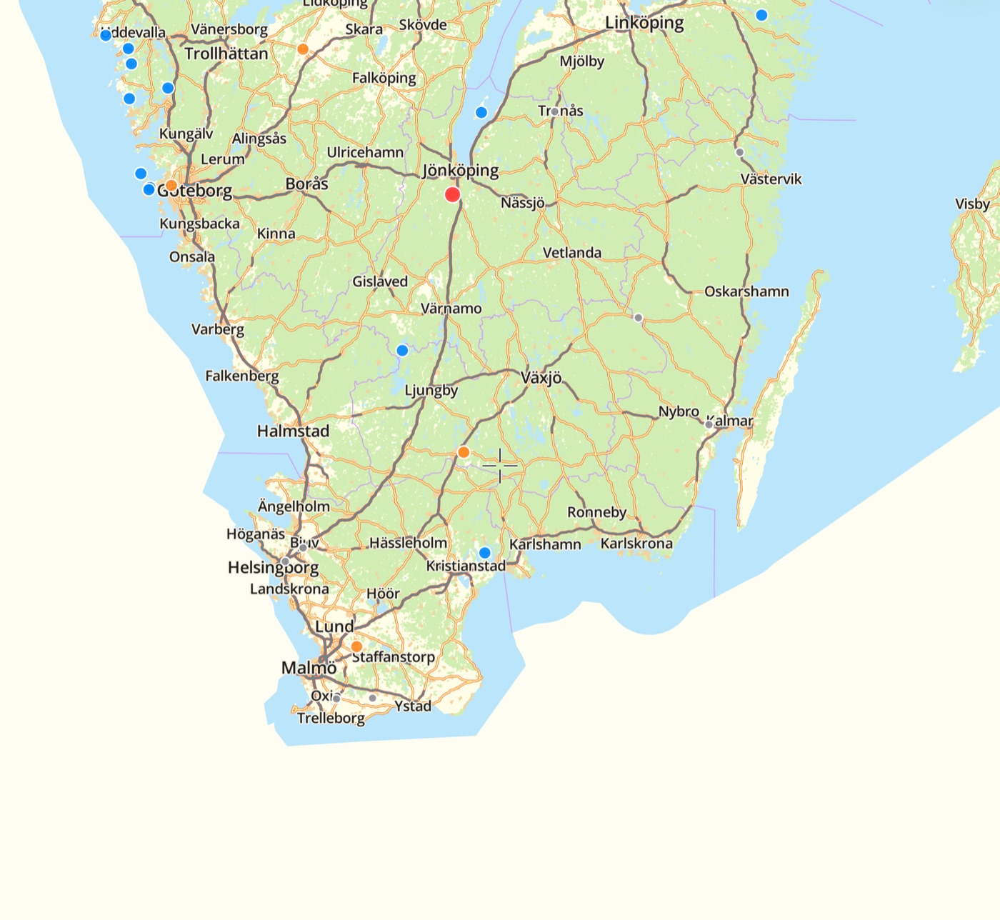
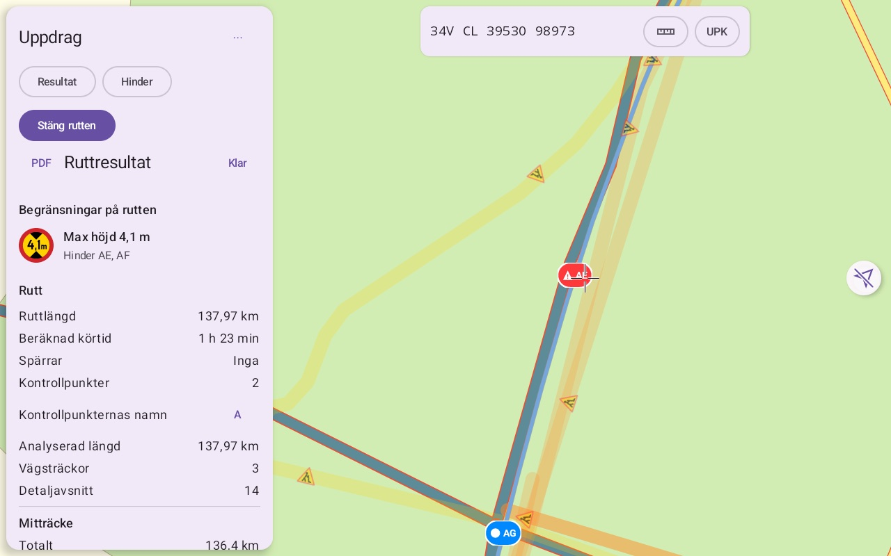
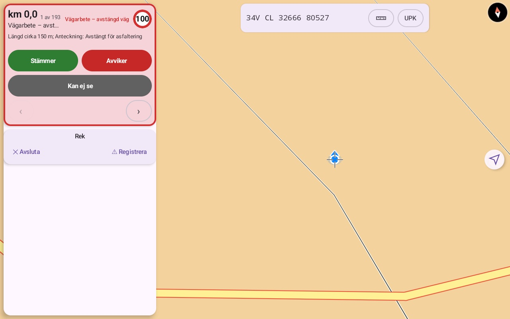

Vägrekognoscering som fungerar utan täckning.
Planera rutten, se vad vägdatan säger om broar, bredder och hinder, kontrollera på plats och lämna en tydlig rapport. På iPhone, iPad och Android.
Bli testareiOS och AndroidSå fungerar det
Ruttens begränsningar på ett ställe
RoadRecce räknar fram rutten i telefonen utifrån Sveriges nationella vägdata (NVDB) och visar vad som begränsar den: fri höjd, bredd, bärighet, broar och järnvägskorsningar. Du ser längd, körtid och vilka sträckor som behöver kontrolleras.
Rapporten blir en PDF som är likadan på alla plattformar.

Byggd för att användas i bilen
Fältläget tar dig från stopp till stopp längs rutten. Stämmer det som databasen säger, eller avviker det? Ett tryck räcker, och din observation sparas bredvid det ursprungliga värdet, aldrig över det.
Hittar du ett hinder lägger du in det direkt. Blockerar det rutten föreslår appen en omledning.

Så fungerar det
- Planera. Sätt ut rutten på kartan, med kontrollpunkter och spärrar, och få en analys av vägarna.
- Fördela. Ge uppdraget till patrullen, med ruttens litreringslista och förslag på trafikposter.
- Kontrollera. Kör rutten i fältläget och registrera vad ni ser.
- Rapportera. Skicka tillbaka registreringarna och få en PDF. Går samma sträcka att läsa på två sätt visas skillnaden, så att någon kan avgöra.
Det som ingår
Offline i fält
Karta, rutter och analys finns i enheten. Fältarbetet kräver inget nät, ingen server och inget konto.
Hinder och omledningar
Egna hinder och Trafikverkets vägarbeten längs rutten. Sök en väg runt avbrottet och reka den.
Litrering och trafikposter
Listor över platser och skyltar utifrån rutten, och förslag på var trafikposter behövs.
Delning i plutonen
Uppdrag, rapporter och rullor delas som krypterade filer till plutonens medlemmar, via den väg ni redan använder.
Koordinater ni kan läsa upp
MGRS under hårkorset, bäring och avstånd vid mätning, och UPK med riktning till närmaste punkt.
Nödradering
Ta bort rutter, uppdrag, observationer och nycklar från enheten med en åtgärd.
Databasen är inte verkligheten
Vägdata är referensinformation. En saknad uppgift betyder inte att begränsningen inte finns. Därför skiljer RoadRecce på vad databasen säger, vad någon har sett och vad någon har mätt, och varje bedömning visar sina skäl. Appen ersätter inte rekognoscering, den gör den snabbare och lättare att följa upp.
iOS och Android
Samma data och samma filer, så att en pluton kan blanda enheter. Ett uppdrag från en iPhone öppnas på en Android-telefon och tvärtom.
iPhone och iPad
Kräver iOS 18 eller nyare. Testas via TestFlight.
Bekräftas med Face ID, Touch ID eller kod. Nycklarna ligger i enhetens säkra enklav.
Android
Kräver Android 12 eller nyare. Testas via Google Play.
Kräver hårdvarubaserat nyckelskydd, vilket de flesta moderna telefoner har. Enstaka funktioner finns ännu bara på iOS.
Vill du prova?
Appen testas nu med en mindre grupp. Berätta vilken enhet du har, iPhone, iPad eller Android, så hör vi av oss.
Kontakta oss